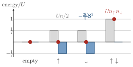

Advanced Quantum Materials 2027 · All lectures · Lecture notes
Session 6. Classical Magnetism and Magnons
6.2 A recap of symmetry breaking and the mean-field philosophy
We have already used this idea twice in this course, first in a small form in Section 1.11 of Session 1 and then in full detail for superconductivity in Session 5. Let us state it once more, in a short way, before we apply it to magnetism. Many-body interactions can spontaneously break a symmetry that the Hamiltonian itself has. Three cases appear in the whole course. Magnets break time-reversal symmetry, and they also break spin-rotation symmetry, since a magnetic moment breaks both. Charge density waves break the translational symmetry of the lattice. Superconductors break gauge symmetry. All three emerge from the same generic starting point, which is a kinetic term that is single-particle and exactly solvable, plus a quartic many-body interaction. All three are also obtained in the same way. Mean-field theory factorizes the quartic term by replacing part of it with its expectation value. This turns a many-body problem that we cannot solve into a single-particle problem that we can solve, and we solve it self-consistently.

Where do the interactions themselves come from? There are two sources. The electrostatic, or Coulomb, repulsion between electrons is the classical contribution, and it is always present. Interactions can also be mediated by other quasiparticles, such as phonons, magnons or plasmons, and these can change the net effective interaction from repulsive to attractive. Magnetism needs a net interaction that is repulsive. The bare Coulomb repulsion is already repulsive, so this case is easy to realize, which is one of the reasons why magnetism is so common in nature.
6.3 The Hubbard model and mean-field magnetism, revisited
The minimal Hamiltonian for all of this is the one-dimensional Hubbard chain that we first saw in equation (1.7) of Session 1,
\[H = -t\sum_{n,\sigma}\left(c_{n\sigma}^\dagger c_{n+1,\sigma} + \text{h.c.}\right) + U\sum_n c_{n\uparrow}^\dagger c_{n\uparrow}\, c_{n\downarrow}^\dagger c_{n\downarrow}, \tag{6.1}\]
which is the hopping \(t\) plus a purely local onsite density-density interaction between opposite spins, called the Hubbard term. A negative \(U\), which is attractive, gives rise to superconductivity, which was the topic of Session 5, with the same chain written as (5.2). A positive \(U\), which is repulsive, gives rise to magnetism, which is our topic in this session.
The mean-field decoupling is done in the same way as before. We replace \(c_{n\uparrow}^\dagger c_{n\uparrow}\) and \(c_{n\downarrow}^\dagger c_{n\downarrow}\) by their expectation values, and we obtain a bilinear Hamiltonian with onsite energies that depend on the spin. Nothing forces these two expectation values to be equal, and the difference between them is the magnetization,
\[m = \langle c_\uparrow^\dagger c_\uparrow\rangle - \langle c_\downarrow^\dagger c_\downarrow\rangle, \tag{6.2}\]
which plays the role of an exchange field. In a schematic form, the resulting mean-field Hamiltonian is \(H_\text{MF} \sim -\tfrac{U}{2}\, m\, \boldsymbol\sigma\cdot c\), where \(\boldsymbol\sigma\) is the vector of Pauli matrices. Self-consistency gives \(m=0\) for \(U<0\) and a magnetic solution with \(m\neq 0\) for \(U>0\), as in Section 1.14.
There is a more careful point here. Nothing in this construction chooses the \(z\) axis. For a single site, the Hubbard interaction can be rewritten exactly in terms of the local spin operator \(\mathbf{S} = \tfrac12 c_\alpha^\dagger \boldsymbol\sigma_{\alpha\beta} c_\beta\) and the total occupation \(n = n_\uparrow + n_\downarrow\), as \(U\, n_\uparrow n_\downarrow = \tfrac{U}{2}n - \tfrac{2U}{3}\mathbf{S}^2\). Here we used that a single site has \(\mathbf{S}^2=\tfrac34(n-2n_\uparrow n_\downarrow)\), since only a singly occupied site has a spin. Mean-field theory then factorizes the quadratic operator \(\mathbf{S}^2\) in the same way as any product of two operators, \(\mathbf{S}^2 \approx 2\langle\mathbf{S}\rangle\cdot\mathbf{S} - \langle\mathbf{S}\rangle^2\). The resulting exchange field points along \(\mathbf{m} \equiv \langle\mathbf{S}\rangle\), in any direction where this expectation value is nonzero. If we choose \(\langle c_\uparrow^\dagger c_\uparrow\rangle \neq \langle c_\downarrow^\dagger c_\downarrow\rangle\), as in (6.2), we select \(m_z\neq 0\). If we choose instead \(\langle c_\uparrow^\dagger c_\downarrow\rangle \neq 0\), we select \(m_x\) or \(m_y\). For this reason mean-field magnetism is not restricted to the \(z\) axis. It gives magnets with a magnetization along any direction in space, and this includes noncollinear arrangements where \(\mathbf{m}\) points in different directions on different sites.

Mean field can only be trusted when \(U \ll t\). We will see in Section 6.6 that magnetism usually needs the opposite regime, and this is the reason why the strongly localized limit, from Section 6.7 on, is so important.
In the mean-field treatment of the Hubbard interaction, which expectation value gives a magnetization along the \(x\) axis?
Show the answers
- A. ✗ False
This is false. Take the spinor \((1,1)/\sqrt2\), which points along \(x\). It has \(n_\uparrow=n_\downarrow=1/2\), so this difference is zero, although \(m_x=1/2\). The difference of densities gives \(m_z\).
- B. ✓ True
This is true. The component \(S^x=\tfrac12(c_\uparrow^\dagger c_\downarrow+c_\downarrow^\dagger c_\uparrow)\) has this expectation value, which is \(1/2\) for the spinor \((1,1)/\sqrt2\).
- C. ✗ False
This is false. For the same spinor \((1,1)/\sqrt2\) the expectation value \(\langle c_\uparrow c_\downarrow\rangle\) is zero, since the state has one electron. This is the pair amplitude of a superconductor and it changes \(N\) by two.
- In Section 6.6 we find the threshold of \(U\) above which the magnetization \(m\) of (6.2) appears.
- In Section 7.1 the mean-field strategy of this section defines weakly correlated matter, and tensor networks are built for the cases where it fails.
- In Section 8.9 a mean-field decoupling that does not break time-reversal symmetry gives the spinons of a quantum spin liquid.
- In Section 9.5b the same magnetic instability appears as a divergence of the spin response, with the Stoner criterion (9.8).